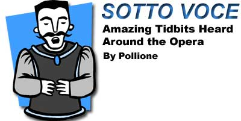

SpearheadNews.com
Super News
2007

Casting News
Events
Rehearsal Schedules
Interviews
Photos
Reviews
More Fun Stuff!
The
Super Handbook
San
Francisco Opera
Links
Classifieds
Contacts
Archives
Members Only
Spearheadnews.com is not officially affiliated with any
performing arts organization.
All photographs remain the property of their copyright holders.
©2007
SpearheadNews
All Rights Reserved

Submit items to Sotto Voce!
Where appropriate, names will not be used in order to protect the innocent, and the not-so-innocent.
"As soon as the dead kids come off stage, send them to Makeup to get their eyes off."
One studio teacher to another during the final dress rehearsal for Macbeth.
"Quick! Someone paint a big red bull's-eye over her dressing room!"
Chorister, whispering on stage about a diva's less-than-stellar aria during a Sunday matinée, as the Blue Angels could be heard overhead loudly buzzing the Opera House (in a not so recent production).
"OK, here it is. The curtain goes up, and ...... um ...... uh...... I forget."
Director Robert Woodruff attempting to direct a chorus scene in Appomattox.
"Come out with the GAY!!"
German language coach Nora Norden, correcting the chorus in pronouncing a word by telling them to stress the letter "g" (which is pronounced "gay" in German).
"Please, please! The 'young man' is a soft gay."
Ditto, telling the chorus not to stress the letter "g" in "jungen Mann."
"Mimes to the stage, please, for the ride to the abyss."
Stage Manager, calling places during La Damnation de Faust.
"Welcome, ladies and gentlemen . . . and the orchestra."
Donald Runnicles
"Chorus men, please wash off your sins for Act 2."
Stage Manager call at first intermission of Tannhäuser.
"I like being yelled at. It makes me more productive."
Unidentified Super, responding to instructions from a notoriously rough director in La Damnation de Faust.
"So, is this the glamour part Gockley's been talking about?"
Half-naked, disheveled Tannhäuser Super pilgrim in the makeup room, wearing matted wig, with stage blood dripping from his torso and two makeup artists smearing stage dirt on his hands and feet.
"If he drops his pecker and starts going, he's not going to stop."
The handler for Alloy the horse, in Tannhäuser, when asked about how any "accidents" onstage could be prevented.
"Did it bring tears to my ass??"
Choreographer Ron Howell misunderstanding a question from Super Paul Romito following a particularly dramatic stage cross by the Super Pilgrims during a staging rehearsal of Tannhäuser. He later said he thought it might be a "San Francisco thing."
"Good girls don't crescendo."
Accompanist Martin Katz, interrupting a Master Class participant singing a roaring high note in the "sweet" half of "Une voce poco fa," from Il Barbiere de Siviglia.
"In this staging the chorus is—what's the word I want?—a proscenium. That's it. I'm sure you've been called other things."
Maestro Donald Runnicles during a rehearsal of Die Meistersinger.
"Yeah, but he was a sports writer."
Response by anonymous Super to director Garnett Bruce's comment that a Wall Street Journal critic called our 2007 Rosenkavalier the best performance of the opera he had ever seen.
"I swear I thought it was part of the dog."
Super Steve Lavazzoli on how he nearly choked the Marshallin on part of her costume during the levée scene in Der Rosenkavalier.
“That was really . . . almost . . . OK.”
Stage Director Sandra Bernhardt to Presentation Supers during a staging rehearsal for Der Rosenkavalier.
“I’m not drunk, I’m an idiot!”
Super Mike Harvey explaining the nuances of his role as a lowlife hanging around Ulrica's, in A Masked Ball.
“To hell with her . . . try to kill me and see what I do. The audience loves a little blood.”
Ramón Vargas, during a 1999 Lucia, after hearing Stage Manager Terry Ganley warning Super Mike Harvey to try not to injure the expensive tenor during their fight sequence.
“I’m not an idiot, I’m acting!”
Count Almaviva, baritone Peter Mattei, to a startled Super lackey in the summer 2006 production of The Marriage of Figaro.
"So who are these schnorrers?”
Anonymous Super, observing three latecomers to the 2005 Super party. One of the schnorrers (Yiddish: freeloaders) was director-designate David Gockley.
"...nearly colliding with Bizarro.”
Hammie-awards presenter Rob Wonder, speaking of the character Don Pizarro in Fidelio.
"Good Lord! It almost isn't over yet.”
Assistant Stage Manager, at the top of Act I of the last performance of the 2001 Die Meistersinger von Nürnberg (run time: 5 hours and 11 minutes).
"I want you to scream very loudly, but very beautifully, of course."
Maestro Nicola Luisotti during the orchestra run-through for La Forza del Destino.
“Gentlemen, lift your skirt with your right hand, and always keep your left hand on your pole.”
Stage Manager Lisa Anderson to the Super pilgrims during a staging rehearsal for La Forza del Destino.
“I really think that all of you are really going to enjoy working with David Robinson.”
Pamela Rosenberg, at the first rehearsal for Norma, mistakenly introducing Super David Robinson, instead of stage director James Robinson, to the company.
“No Nationalist Socialist spatulas!!”
Director Peter Sellars to Doctor Atomic choristers, directing them to spread their fingers and thrust their arms toward the audience.
“He doesn’t want those skinny little girls. He wants a REAL woman”
Soprano Jane Eaglen, offstage, shimmying as she waited to go on as Turandot in the 2002 production, while Calaf was onstage being tempted by the ladies of the corps de ballet.
“Now, grab my ass."
Female principal to an unsuspecting Super Goomba during a staging rehearsal for a short drunken dance sequence in Rodelinda. The Super was later replaced in the scene by a member of the corps de ballet.
“Will all the women with big jugs move to stage left?”
Director Andrew Sinclair staging a village scene in the summer production of The Pearl Fishers.
“Do I have to wear my costume?”
Novice Super to a perplexed Production Super Captain at the final dress rehearsal for Billy Budd.